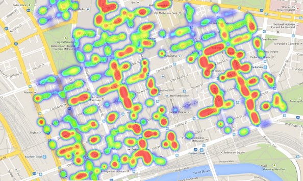
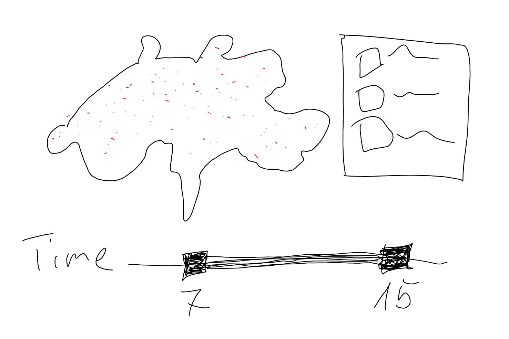

Every year, there are thousands of accidents on our roads. Everyone might know some critical locations in his own area, where there are accidents quite often and are more severe. Car manufacturer already have the goal to lower the frequency, as well the severity of the road accidents. They can for sure lower the frequency and severity of some car accidents, but they will not be able to eliminate all accidents. Some accidents are just the result of an unfavorable constellation of how a street or crossing was planned and built.
If the road safety office wants to lower the frequency of road traffic accidents, they need to analyze the accidents that happened in the past. For the analysis, they need to know why these accidents occurred. But more important, they must know where they happen, in order to find out the reason of the accident.
Our goal is to create an interactive visualization that helps the road safety office to identify where the accidents happen regularly.
The initial plan was to create a heat map as seen below:
Due to the huge dataset, we were not able implement a heat map that performs well (in terms of loading times). Therefore we created a visualization that is limited to only one accident category. The visualization has the ability to filter for street types and involved actors. The new sketch for the idea is the following:
